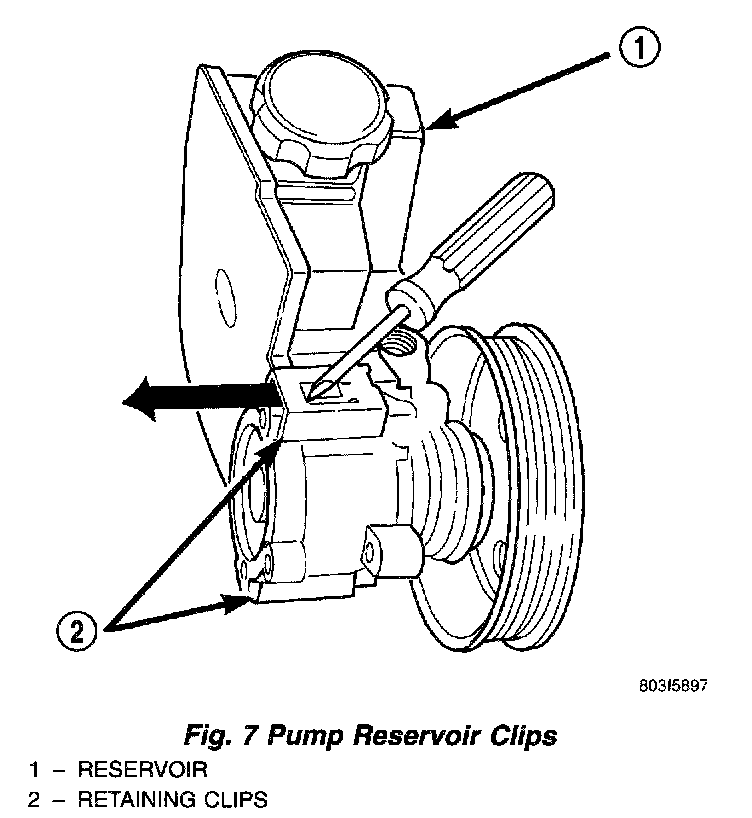

Power Steering Fluid Reservoir: Service and Repair
Fig. 7:

REMOVAL
1. Remove power steering pump.
2. Clean exterior of pump.
3. Clamp the pump body in a soft jaw vice.
4. Pry up tab and slide the retaining clips off.
5. Remove fluid reservoir from pump body. Remove and discard O-ring seal.
INSTALLATION
1. Lubricate new O-ring Seal with Mopar (R) Power Steering Fluid or equivalent.
2. Install O-ring seal in housing.
3. Install reservoir onto housing.
4. Slide and tap in reservoir retainer clips until tab locks to housing.
5. Install power steering pump. Refer to Pump Replacement.